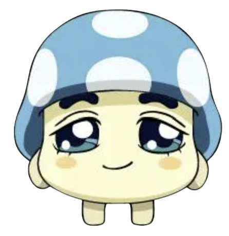

버섯쿵야 소개!!

자리를 깨끗이 하고 자만심이 풍부하지만 자긍심이 크다. 1화에 따르면 먹보, 로맨티스트라고 언급되지만 정작 먹보 나르시스트라는 설정이 강조되는 장면은 거의 없다. 비중성 높게 나오는 에피소드는 거의 없는 편이며 주로 다른 쿵야들의 보조로 나온다. 그나마 비중이 크게 등장하는 에피소드인 21화 '버섯쿵야를 깨워라' 편에서는 마이크의 전류로 인해 감전되었고 이로 인해 버섯쿵야의 뇌에서 감성을 담당하는 부분이 망가져서 온몸이 마비되어 병원에 입원되었다.